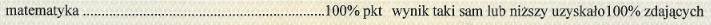

Trochę o mojej osobie :D
Mam na imię Bartek, jestem studentem Politechniki na kierunku Automatyka i Robotyka, dlatego też matematyka towarzyszy mi na codzień juz od lat.
Swoją maturę zdałem już 4 lata temu z wynikiem z podstawy, który można zobaczyć poniżej:

Dodatkową informacją, która może zachęcić do nauki ze mną jest fakt, że jestem korepetytorem już od ponad roku i regularnie, minimum raz w tygodniu,
udzielam moim uczniom korepetycji i zawsze chętnie umawiają się na kolejne zajęcia 😉 Do każdego ucznia podchodzę indywidualnie i zależy mi na tym aby jak najlepiej opanował
omawiane tematy.